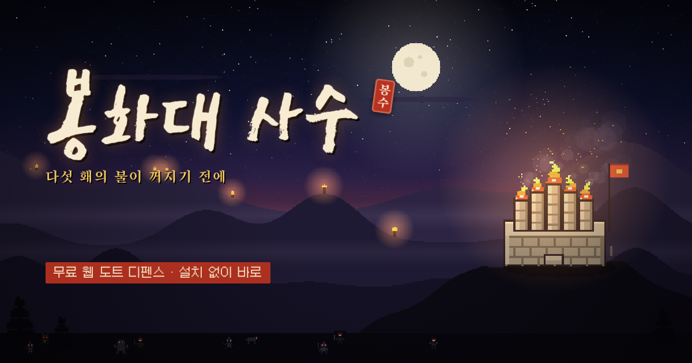

봉화대 사수
다섯 홰의 불이 꺼지기 전에
조선의 밤, 산마루의 봉수대에 사방의 어둠에서 도깨비와 산적, 요괴가 몰려옵니다. 장터에서 무기와 부적을 사 모아 봉수대를 40라운드 동안 지키고, 마지막에 깨어나는 흑룡을 쓰러뜨리면 이깁니다. 설치나 가입 없이 PC와 휴대폰 브라우저에서 바로 할 수 있는 무료 게임입니다.
지금 바로 하기
하는 법
- 왼쪽 장터에서 무기를 사면 봉수대가 알아서 쏩니다. 엽전은 초마다 들어오고, 적을 잡으면 더 들어옵니다.
- 라운드마다 주로 오는 적의 갑옷이 화면 위에 나옵니다. 그 갑옷에 강한 무기를 고르면 피해가 두 배입니다.
- 같은 종류나 같은 속성의 서로 다른 물건을 모으면 세트 효과가 붙습니다(같은 물건을 겹쳐 사도 세트 단계는 오르지 않습니다). 같은 물건을 또 사면 봇짐 한 칸에 ×2, ×3으로 쌓입니다.
- 봉수대의 다섯 홰가 체력입니다. 체력이 20% 줄 때마다 불이 하나씩 꺼집니다. 위기에는 천벌로 화면의 적을 쓸어내세요.
무기와 상성
| 무기 종류 | 강한 상대 | 특징 |
|---|---|---|
| 창검 | 중갑 (도깨비·산적) | 빠른 연타, 칼날이 튕김 |
| 궁시 | 경갑 (날랜 무리·들개·도깨비불) | 긴 사거리, 관통 |
| 부적 | 철갑 (철갑 무사·강시) | 여러 적을 한꺼번에 |
| 화포 | 석갑 (돌하르방·바위 거인) | 폭발 범위 피해 |
| 요술 | 상성 없음 | 0.5~2배 무작위 |
화염·냉기·독·뇌전 속성은 불태우기, 느리게 하기, 독 쌓기, 번개 튕기기를 더합니다. 10·20·30라운드에는 두억시니, 불가사리, 구미호가 나옵니다.
계속 하게 되는 것
- 난이도 6단계: 쉬움·보통·어려움, 그리고 이기면 열리는 악몽 I~III
- 수호 기억: 판을 마칠 때마다 기억 조각이 쌓여 시작 엽전, 수입, 체력 같은 능력을 영구히 키웁니다
- 주간 랭킹전: 한 주 동안 모두에게 같은 상점과 같은 적 순서. 하루 3번 도전하고, 기록은 아이디로 명예의 전당에 올라갑니다
- 보물 도깨비: 5·15·25·35라운드에 나타나는 보물 도깨비를 잡으면 복주머니 셋 중 하나를 고릅니다
조작
1~8 구매 · R 새로고침 · Z 천벌 · B 세트 · D 딜미터 · G 사거리 · H 상성표 · Tab 배속 · Space 멈춤. 휴대폰은 가로로 두고 장터 카드를 두 번 눌러 삽니다. 세로로 열면 화면을 가로로 돌려 드립니다.
계정
로그인 없이 게스트로 바로 할 수 있고, 진행은 그 브라우저에 저장됩니다. 영문 아이디로 가입하면 진행이 서버에 저장되어 다른 기기에서 이어서 하고, 주간 랭킹전에 참가할 수 있습니다. 이메일은 받지 않습니다. 자세한 내용은 개인정보처리방침에 있습니다.
만든 곳
그림과 효과음은 모두 코드로 직접 그리고 합성했습니다. 글꼴은 Galmuri(SIL OFL 1.1), East Sea Dokdo, Song Myung을 씁니다. 버그나 의견은 GitHub 이슈로 남겨 주세요.